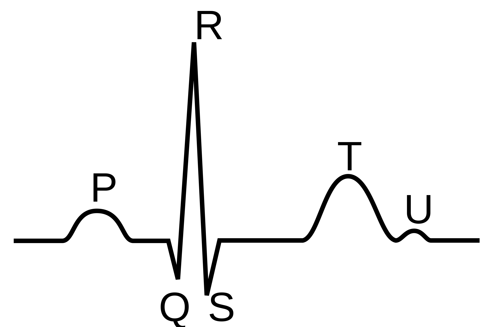

9 Data transformation
When we have finished this chapter, we should be able to:
9.1 Importing data
Up to this point we have used data objects created with functions. Most of the time however, we work with data stored elsewhere and there are many ways to import such data into an R session.
Data are stored in spreadsheets which are often saved in one of the following two formats:
- A Comma Separated Values
.csvfile. We can think of a.csvfile as a barebones spreadsheet where:
- Each line in the file corresponds to one row of data/one observation.
- Values for each line are separated with commas “,”. In other words, the values of different variables are separated by commas.
- The first line is often, but not always, a header row indicating the names of the columns/variables.
- An Excel
.xlsxspreadsheet file. This format is based on Microsoft’s proprietary Excel software. As opposed to a bare-bones.csvfile, an.xlsxExcel files contains a lot of meta-data, or in other words, data about data. Some examples of Excel spreadsheet meta-data include the use of bold and italic fonts, colored cells, different column widths, and formula macros.
We will use the dataset named arrhythmia which is a .csv file.
The meta-data (data about the data) for this dataset are as following:
- age: age (yrs)
- sex: sex (0=male, 1=female)
- height: height (cm)
- weight: weight (kg)
- QRS: mean duration of QRS (ms) 
- heart_rate: heart rate (beats/min)
{kind=link}
If the data set is stored in our computer disc as a .csv file we can read it with the read_csv function from dplyr package:
The function read_csv() is used to read the arrhythmia.csv file as following:
# A tibble: 452 × 6
age sex height weight QRS heart_rate
<dbl> <dbl> <dbl> <dbl> <dbl> <dbl>
1 75 0 190 80 91 63
2 56 1 165 64 81 53
3 54 0 172 95 138 75
4 55 0 175 94 100 71
5 75 0 190 80 88 75
6 13 0 169 51 100 84
7 40 1 160 52 77 70
8 49 1 162 54 78 67
9 44 0 168 56 84 64
10 50 1 167 67 89 63
# … with 442 more rowsThis data frame contains 452 observations and 6 variables. However, when we call the name of the object (arrhythmia), we can see in the console the first 10 rows, and all the columns that fit on screen. Note that by default the first row of the .csv file was used as the column names of the data frame.
We might also have noticed the row of three letter abbreviation dbl under the column names. These describe the type of each variable and may be:
dblstands for doubles, or real numbers.intstands for integers.chrstands for character vectors, or strings.lglstands for logical, vectors that contain onlyTRUEorFALSE.fctstands for factors, which R uses to represent categorical variables with fixed possible values.datestands for dates.dttmstands for date-times (a date + a time).
As we can see the categorical variable sex is coded as 0 for males and 1 for females, so it is recognized of double type.
We can use the factor() function:
Let’s look at the data again with the glipmse() function:
glimpse(arrhythmia)Rows: 452
Columns: 6
$ age <dbl> 75, 56, 54, 55, 75, 13, 40, 49, 44, 50, 62, 45, 54, 30, 44,…
$ sex <fct> male, female, male, male, male, male, female, female, male,…
$ height <dbl> 190, 165, 172, 175, 190, 169, 160, 162, 168, 167, 170, 165,…
$ weight <dbl> 80, 64, 95, 94, 80, 51, 52, 54, 56, 67, 72, 86, 58, 73, 88,…
$ QRS <dbl> 91, 81, 138, 100, 88, 100, 77, 78, 84, 89, 102, 77, 78, 91,…
$ heart_rate <dbl> 63, 53, 75, 71, 75, 84, 70, 67, 64, 63, 70, 72, 73, 56, 72,…Now, the variable sex is a factor variable (fct) with two levels:
levels(arrhythmia$sex)[1] "male" "female"